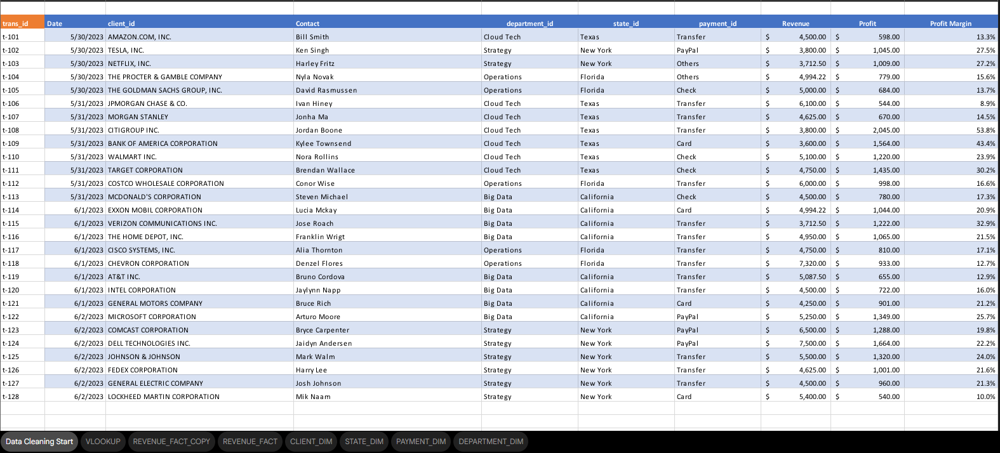
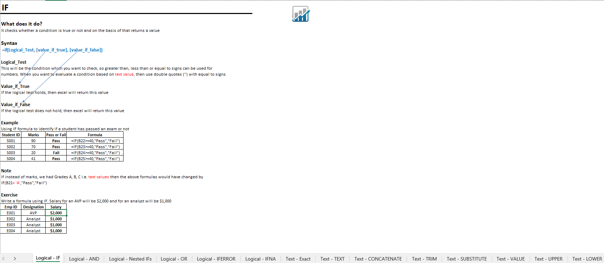
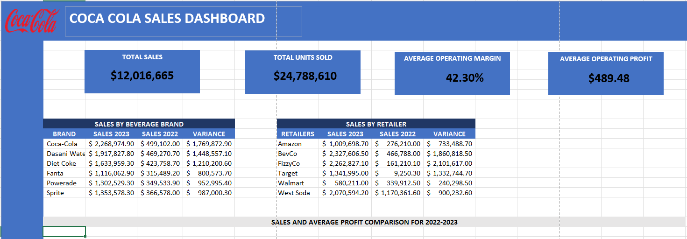
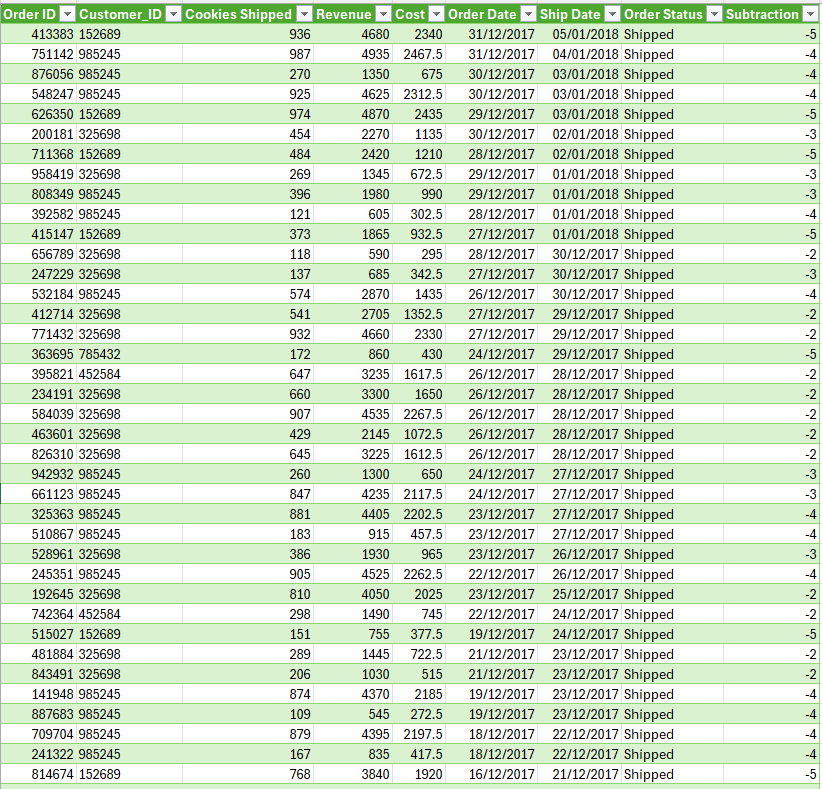
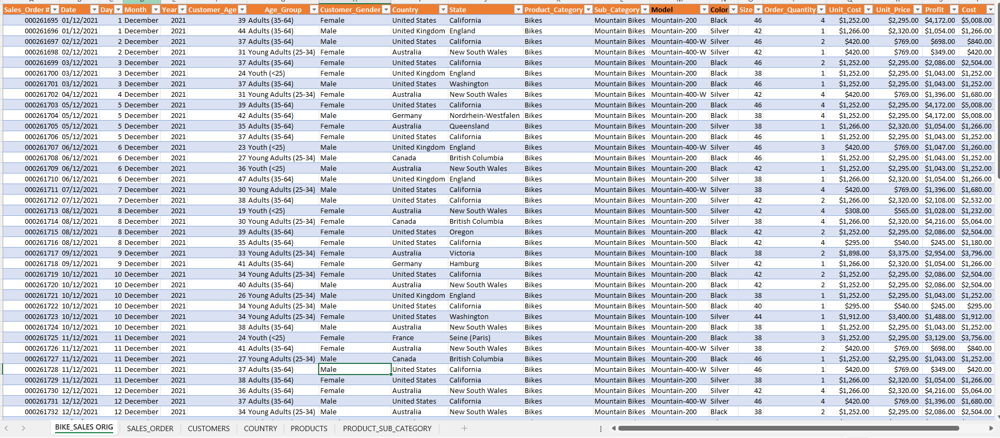
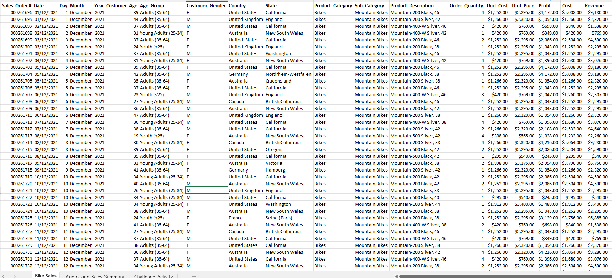
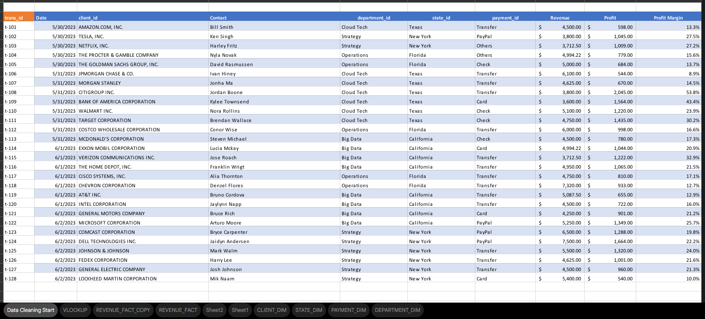

Aspiring Software Developer
"I am a 3rd year Computer Science student who's barely hanging by. Currently exploring the road to software development, I enjoy solving complex problems and learning new things."
Experience and Projects

This task provides a demonstration file that students will use to practice basic data preparation and cleaning techniques. Students will identify common data issues such as missing values, duplicate entries, and inconsistent formatting, then apply appropriate methods to correct them. The goal is to become familiar with the initial steps required to prepare raw data for accurate analysis.

This task focuses on using basic Microsoft Excel functions to perform calculations and manipulate data. Students will apply commonly used functions such as SUM, AVERAGE, COUNT, IF, and other related formulas to analyze and organize information within a worksheet. The objective is to help students understand how Excel functions can automate calculations and improve data analysis efficiency.

This task introduces students to the process of creating a simple dashboard in Microsoft Excel. Students will use charts, tables, and basic Excel tools to visually present key data and insights in a clear and organized layout. The objective is to understand how dashboards can be used to summarize information and make data easier to interpret for reporting and decision-making.

This task introduces students to the basic features of Power Query in Excel. Students will explore how to import, transform, and organize data using Power Query tools. The goal is to understand how Power Query can simplify data cleaning, preparation, and transformation processes before performing further analysis.

This task focuses on preparing raw data for analysis by identifying and correcting errors, inconsistencies, and missing values. Students will clean the dataset by removing duplicates, handling incomplete or incorrect entries, and formatting the data into a consistent structure. The goal is to produce a well-organized and reliable dataset that is ready for further analysis and visualization.

This task focuses on summarizing and analyzing data using Pivot Tables and creating visual representations using charts in Excel. Students will organize the dataset, generate Pivot Tables to identify patterns and trends, and create appropriate charts to present the results clearly. The objective is to transform raw data into meaningful insights that are easy to understand and interpret.

This task focuses on organizing and transforming data into a more structured and efficient format using Power Query. Students will apply normalization techniques by separating repeating data into related tables, removing redundancy, and ensuring the dataset follows proper data organization principles. The objective is to create a clean, well-structured dataset that improves data consistency and makes analysis easier.